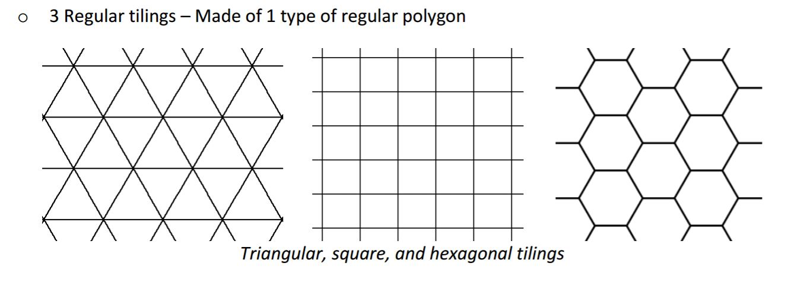

1. Tree-Branch Structure
The first iteration I did is to explore the nesting structure of a tree.
How a tree expands and becomes complex due to the orientations of different branches.


I have decided to use some sort of nesting structure for my model. The reason to use nesting structure is because the whole thing can be portable and neat when not expanded, but also has the potential to be anything when separated. I have looked through some examples, and an example from Pérez Art Museum Miami and Cellular Packing have inspired me.
I also have looked through many different materials, and this spongy silicon interests me a lot. It is soft so it is safe for children to play with. Its interlocking LEGO-like joints is also something I would like to explore on my model.
1. Tree-Branch Structure
The first iteration I did is to explore the nesting structure of a tree.
How a tree expands and becomes complex due to the orientations of different branches.
2. Orange Peeling Structure
This iteration is inspired from the cellular packing mechanism first. Most cellular packing uses triangles, cubes or hexagons as basic building blocks. Hexagon is also consisted of 6 equilateral triangles.
Therefore, a nesting can be built nicely from equilateral triangles.
After looking closely at the triangular and hexagonal packing, I was reminded of the process of orange peeling. Something circular getting expanded into a row of triangles!
This iteration represents a process of a bigger thing rolls into smaller and smaller modular components.


3. Mango Peeling Structure
This is another step of decomposition after the "Orange Peeling" process. It is more similar to the how people eat mangos. Simply push or bend to expose the next-level smaller components.


Each individual small piece can also be taken out of the "peel" and stick to each other to make more expanded forms. In this model, the connection is made using velcro strips, but later I would like to explore more options such as magnets.
My idea is that in the final version, each piece can light up only when it is connected to the peel or another piece on the peel.


I have tested how pieces can be connected to the power course using snap buttons. It works perfectly except the is it hard to snap and unsnap the buttons. I am thinking to change the buttons to magnets, which is easier to connect.


1.Test different materials.Right now I am using clear acrylics or white PLA, and they either does not refract enough light or is too solid. I would like a material that is only transparent enough to show light, but not the whole inside.
2. I would like to explore magnets as connections, which can act both as a mechanical joint and a electrical joint.